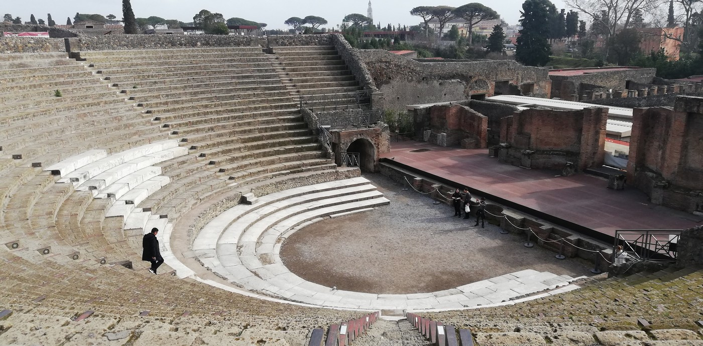
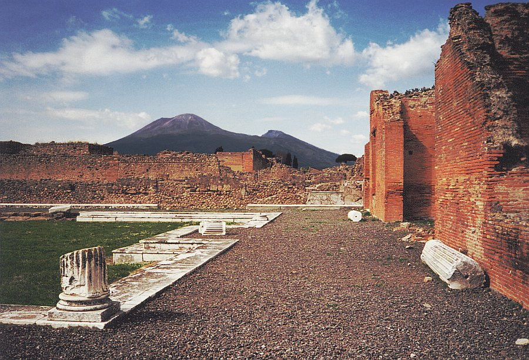
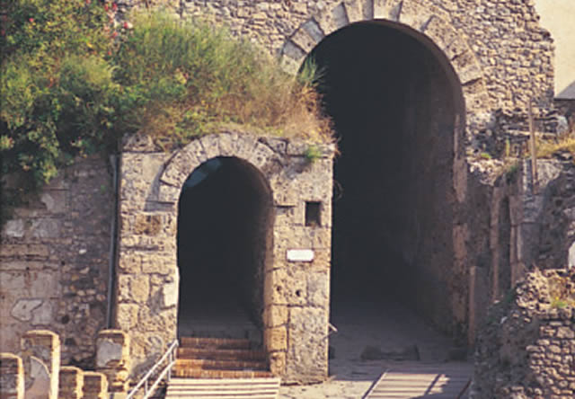

Miasto zostało założone w VII wieku p.n.e. przez Osków, następnie znalazło się pod panowaniem greckim, później (525–474 r. p.n.e) etruskim. W czasach oskijskich lub etruskich miasto zostało otoczone murami obronnymi zbudowanymi z wulkanicznego tufu. Pod koniec V w. p.n.e. zdobyte przez Samnitów. U schyłku IV wieku p.n.e. Pompeje zawarły z Rzymem układ sojuszniczy, który zobowiązywał je do pomocy militarnej, lecz pozostawiał mieszkańcom autonomię, własne urzędy i język. Historyczne Pompeje powstały na stoku wzniesienia utworzonego przez prehistoryczną lawę. Położone były na wysokości 40 m n.p.m. nad rzeką Sarnus (dzis. Sarno). Rejon ten, niezwykle korzystny dla osadnictwa (łagodny klimat, żyzność ziemi, przystanie na brzegach Zatoki Neapolitańskiej), przyciągał zarówno ludy italskie, jak i kolonizujących Greków, sprzyjając mieszaniu się rdzennej i napływowej ludności oraz tworzeniu mozaiki kultur. Jeszcze przed dominacją samnicką zostało przekształcone z niewielkiej osady rolniczej w miasto rozplanowane wokół tzw. Trójkątnego Forum. Pod panowaniem Samnitów obszar 66 ha otoczono murem obronnym o długości ok. 3 km. Pompeje miały system kanalizacyjny poprowadzony wzdłuż ulic. Woda do fontann ulicznych, term i bogatszych domów dostarczana była akweduktem. Budynki mieszkalne wyposażone były w zbiorniki impluvium gromadzące deszczówkę. Zabudowa rozplanowana wzdłuż regularnej siatki ulic podzielona była na dziewięć sfer, z których każda pełniła określoną funkcję. Gospody i stajnie dla zwierząt jucznych rozlokowane były w pobliżu bram wjazdowych. Przy głównych ulicach usytuowano zajazdy i gospody. Przy ulicach ulokowane były domy mieszkalne z atriami i perystylami. Podczas prac wykopaliskowych odsłonięto liczne sklepy, warsztaty, teatr, forum z bazyliką, kurią i świątyniami, trzy palestry i termy, amfiteatr z koszarami gladiatorów i wiele innych obiektów. Dopiero w ostatnim okresie historii zaczęto budować domy mieszkalne poza murami obronnymi, wcześniejsze przebudowy ograniczały się do terenów wewnątrz fortyfikacji. Zmiany polegały m.in. na łączeniu 2-3 starszych, pochodzących z okresu samnickiego domów w duże rezydencje z przylegającymi do nich sklepami lub warsztatami. Domy powiększano też przez dobudowywanie piętra. W okresie pomiędzy IV–I wiekiem p.n.e. miasto było samorządne, zachowywało też tradycyjne samnickie urzędy z mediss toutiksem jako najwyższym urzędnikiem. W III i II wieku p.n.e. przeżywało okres dynamicznego rozwoju, będąc jednym z najważniejszych portów w regionie, gdy obsługiwało Nolę i Nucerię. W jego gestii znajdowało się również ujście żeglownej rzeki Sarnus. Miasto i jego okolice było położone na żyznych ziemiach, gdzie uprawiano winorośl (z produkcją wina renomowanego w świecie antycznym), oliwki i zboża. W II wieku p.n.e. nastąpiło jego znaczne rozszerzenie w kierunku północnym i wschodnim oraz przebudowa centralnych części z położonymi przy forum budowlami reprezentacyjnymi. Liczba ważnych i reprezentacyjnych budowli oraz ich wielkość pozwoliły Pompejom nawet wyprzedzić pod tym względem ówczesny Rzym. Był to skutek handlowych zysków na dostawach dla wojska oraz gwałtownego rozwoju handlu z greckim Wschodem po zwycięskich wojnach z Kartaginą. W wojnie sprzymierzeńczej w 89 roku p.n.e. Pompeje stanęły po stronie miast italskich. Miasto musiało odegrać znaczącą rolę w wojnie, ponieważ było wymieniane wśród tych ośrodków, które zbuntowały się jako pierwsze. Appian z Aleksandrii wspomina też o walkach prowadzonych w regionie Pompejów przez Sullę, zaś Wellejusz Paterkulus wspomina oblężenie miasta, brak natomiast archeologicznych śladów zdobycia miasta w boju. Po zakończeniu wojny zostało pozbawione praw i przekształcone w 80 roku p.n.e. w rzymską kolonię wojskową Colonia Veneria Cornelia Pompeianorum. Kolonie sullańskie były ustanawiane tylko w najbardziej wrogich ze zdobytych miast italskich. Przez ponad dwadzieścia lat pierwotni mieszkańcy byli pozbawieni większości praw obywatelskich i dyskryminowani na rzecz kolonistów, rekrutowanych wśród weteranów wojska Sulli. Największy rozwój miasta nastąpił w I wieku n.e. Głównym źródłem utrzymania mieszkańców był handel morski.

Amfiteatr w Pompejach – starożytny rzymski amfiteatr, znajdujący się w Pompejach. Jest najstarszą zachowaną budowlą tego typu. Budowa amfiteatru, zlokalizowanego w południowo-wschodniej części miasta, została zainicjowana przez konsulów po założeniu w Pompejach w 80 roku p.n.e. kolonii sullańskiej. Wzniesiona na planie owalu o wymiarach 135 × 104 m budowla przeznaczona była na zawody sportowe, walki gladiatorów i walki ze zwierzętami. Arena i pierwsze rzędy widowni znajdowały się poniżej poziomu gruntu. Cavea liczyła 35 rzędów siedzeń, wokół najwyższego sektora biegła ponadto odkryta galeria z osobnymi wejściami, przeznaczona dla kobiet. Na zewnątrz tarasu pierwszego piętra wystawały z fasady konsole z otworami na drągi, na których w razie potrzeby rozpinano velarium. Łącznie na widowni mogło zmieścić się jednorazowo do 20 tysięcy widzów. Do historii przeszły wspomniane przez Tacyta w Rocznikach igrzyska z 59 roku, w trakcie których doszło do kłótni pompejańczyków z kibicami z pobliskiej Nucerii, które przerodziły się w krwawe zamieszki. Śledztwo w sprawie rozruchów zostało powierzone przez cesarza Nerona senatowi i skutkowało ukaraniem miasta 10-letnim zakazem organizowania igrzysk. W październiku 1971 roku w amfiteatrze odbył się koncert brytyjskiej grupy Pink Floyd, zarejestrowany i wydany pod tytułem Pink Floyd: Live at Pompeii. Po 45 latach David Gilmour ponownie wystąpił w Pompejach w lipcu 2016 roku.

Wezuwiusz (łac. Vesuvius, wł. Vesuvio) – wulkan na terenie Włoch, na Półwyspie Apenińskim, nad Zatoką Neapolitańską. Jedyny czynny wulkan leżący bezpośrednio na kontynencie europejskim. Skałą wylewną Wezuwiusza jest lawa aa, której stare potoki leżą na zboczach wulkanu. Wezuwiusz zaliczany jest do stratowulkanów. Początki jego aktywności sięgają okresu sprzed około 16 tys. lat. Najbardziej wzmożonym okresem aktywności wulkanu były lata 1631–1872. Według ostatnich pomiarów, jego wysokość wynosi 1281 m n.p.m., głębokość krateru – 230 m, średnica – 550–650 m. Dzisiejszy stożek znajduje się w kalderze utworzonej podczas wybuchu z 79 roku. Szczyt północnej krawędzi kaldery nosi nazwę Monte Somma. Wiek najstarszych skał Wezuwiusza określany jest na ok. 200 tys. lat. Najbardziej znany jest wybuch Wezuwiusza z 79 roku, w którym zniszczone zostały rzymskie miasta Pompeje, Herkulanum i Stabie. Przez setki lat sądzono, że wybuch nastąpił 24 sierpnia 79 roku, na podstawie listu napisanego przez naocznego świadka, rzymskiego pisarza i prawnika Pliniusza Młodszego do historyka Tacyta pod koniec 107 lub na początku 108 roku. Odkrycie w Pompejach w październiku 2018 roku napisu węglem na murze jednego z domów, w którym jest mowa o 16 dniu przed kalendami listopadowymi, czyli o 17 października, może stanowić dowód, że do wybuchu Wezuwiusza doszło później, najprawdopodobniej 24 października 79 roku. Napis zachował się dlatego, że został przykryty na wieki przez materiały wulkaniczne. Pompeje istniały i funkcjonowały normalnie 17 października. Od dawna pojawiały się spekulacje, że Wezuwiusz wybuchł później niż w sierpniu, gdyż w ruinach Pompejów odkryto jesienne owoce oraz piecyki do ogrzewania. Ostatnia pliniańska erupcja Wezuwiusza nastąpiła w grudniu 1631 roku. Według badań z 2017 roku najbardziej prawdopodobne jest powtórzenie scenariusza wybuchu z 1631 roku. Ostatni duży wybuch został odnotowany 13 marca 1944 roku i od tego czasu Wezuwiusz nie daje oznak aktywności.

Mury obronne Pompejów nie były dziełem Rzymian, lecz miejscowych Italików, ludności oskijsko-samnickiej. Powstały na długo przed formalnym włączeniem miasta pod Wezuwiuszem do rzymskiego państwa, które nastąpiło po wojnie sprzymierzeńczej na początku I wieku p.n.e. Jeszcze w czasie tej wojny samnickie fortyfikacje pozwoliły Pompejom opierać się – i to być może skutecznie – legionom Lucjusza Korneliusza Sulli. Jak mury te wyglądały i co wiemy o ich kilkuwiekowej historii? Pierwszą rzeczą, jaką w starożytności widzieli przybysze zbliżający się do miast lub miasteczek w Italii były mury obronne. Tak też było w przypadku Pompejów, których dziś zazwyczaj nie kojarzymy z fortyfikacjami miejskimi, gdyż całą uwagę skupiamy na wnętrzu miasta. Warto przyjrzeć się bliżej pompejańskim murom obronnym, aby lepiej poznać historię miasta i uświadomić sobie, jak wyglądało niegdyś „z zewnątrz”. Eksplorację murów otaczających Pompeje rozpoczęto w 1. połowie XIX wieku, po wykupieniu przez państwo – Królestwo Neapolu – całego obszaru, który zajmowało starożytne miasto. Stało się to za sprawą Karoliny Bonaparte, żony Joachima Murata – króla Neapolu w latach 1808-1815. Całkowitego odsłonięcia murów dokonał jednak dopiero w latach 30. XX wieku znany archeolog Amedeo Maiuri, wieloletni dyrektor pompejańskich wykopalisk (1924-1961).